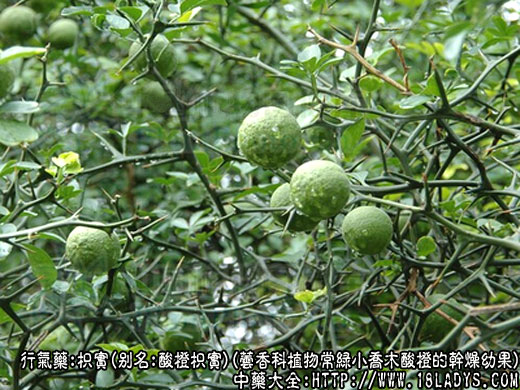
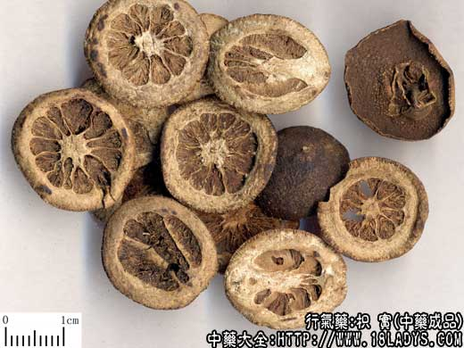
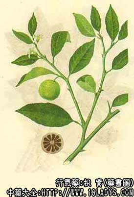

枳实为常用中药。始载《神农本草经》列为上品。枳乃木名，实乃其子故名。
现市售上品原植物品种繁多，比较混乱，主要有酸橙、香橼和枳三种。小个者称鹅眼枳实，个大切成两半者称枳实。
一、酸橙枳实
来源：为芸香科植物常绿小乔木酸橙的干燥幼果。均为栽培。
产地：主产于四川、江西、湖南等地。
性状鉴别：果实呈球形，横切两半，直径0.8～2.6厘米。外表灰绿色或黑绿色，有颗粒状突起的微皱。顶端微突起，基部有果柄脱落的圆疤，因干后收缩切面略现隆起。果肉（中国皮）黄白色，边缘有凹入的油室，中央淡黄褐色，有9～12瓣果瓢，呈多瓣梅花形。质坚硬，不易破开。气芳香，味道苦微酸。
二、香橼枳实
来源：为芸香客植物常绿乔木香橼的干燥幼果。均为栽培。
产地：主产于江西、浙江、江苏等地。
性状鉴别：果实呈球形、矩圆形、倒卵球形、横切成两半，直径0.5～2.6厘米，灰红棕色或暗棕绿色，有网状隆起的粗皱纹。果实顶端有环状的金钱环。基部有环状果柄痕迹。切面果肉较粗糙，黄白色，边缘有凹入的小油室，中央棕褐色，有10～20瓣果瓤。有强烈香气，味酸而后微苦。
以色白黑绿，肉厚色白，瓤小，体坚实者为佳。
三、枳实
别名：绿衣枳实。
来源：为芸香客植物常绿或半落叶小乔木或灌木只（枸桔）的干燥幼果，多为栽培。
产地：主产于福建、台湾等地，此外华东、中南、西南、华北、西北地区亦有分布。
性状鉴别：果实呈圆球形，横切二半，直径0.8～2厘米。表面灰绿色，有颗粒状突起及微隆起的纵皱，被有细柔毛。顶端有明显的花柱基，基部有短果柄或果柄脱落后的痕迹。切面果肉较薄，黄白色，边缘有凹入的小油室，中央棕褐色，有6～8瓣果瓤。味微酸苦。
以外皮灰绿色，果肉黄白，皮厚瓤小者为佳。
主要成分：含有挥发油（为柠檬烯）、黄酮类（为橙皮甙、苦橙甙等）。
药理作用：行气破积。现已经证实其作用为兴奋胃肠功能。动物实验发现枳实煎剂能使胃肠蠕动增强而节律。
此外，枳实能兴奋子宫，作用显著。动物实验发现枳实、枳壳的煎液能使家兔子宫收缩有力，紧张度增加，为这两种药物用于子宫脱垂提供了初步的科学根据。
炮制：切片、麸炒。
性味：苦酸、寒。
归经：入脾、胃二经。
功能：破气除积、化痰消痞。
主治：食积痰滞不消，气郁胸腹，痞满胀痛，痢疾后重等症。
临床应用：1、治胃肠食积（胃部满实、饮食停滞）。如属慢性消化不良，由脾胃功能衰弱引起者，常配机健脾药白术、健胃行气药木香、砂仁，方如香硝枳术丸；如属急性消化不良，配消导药神曲、麦芽，或生姜、陈皮等煎汤。
2、治湿热积滞，泄泻下痢、里急后重，并有胸闷、腹痛者（如急性胃肠炎、细菌性痢疾等），配大黄以清肠内积秽，配黄芩、黄连清热，茯苓，泽泻利湿，方如枳实导滞汤。
3、治胃下垂。可用单示浓煎液，每日分三次服，能改善胃张力，减轻腹胀。
用量：3～9g。
处方举例：1、香砂枳术丸（《摄生秘剖》）（成药）：每服6～9g，每日2次。
2、枳实导滞汤（《内外伤辨惑论》）：枳实9g，生大黄9g（后下），白术9g，黄芩6g，川连4.5g，茯苓9g，泽泻6g，神曲9g，水煎服。
注：1、商品枳实品种较混乱，除正文所述的三种外，有的地区以甜橙、蟹橙、宜昌橙代之，以及枸橼和柚的幼果横切两半作枳实使用。
2、全国及出口普遍习销的枳实，以酸橙和香橼的幼果为主。枳（枸桔）的枳实主销福建、江西、陕西，因其色灰绿，故称绿衣枳实。古代文献记载最早的“枳”，即现在的枸桔，故列入正文之内，京津不习销。此种成熟的果实，在山西、河南等地又作香橼使用，在四川又将此幼果作正青皮使用。
3、鹅眼枳实，即小个的幼果，其最小的形如鸟枪子，四川又叫枪子枳实。